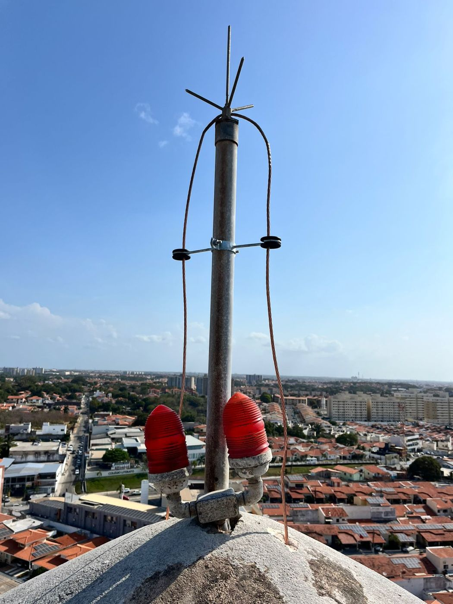
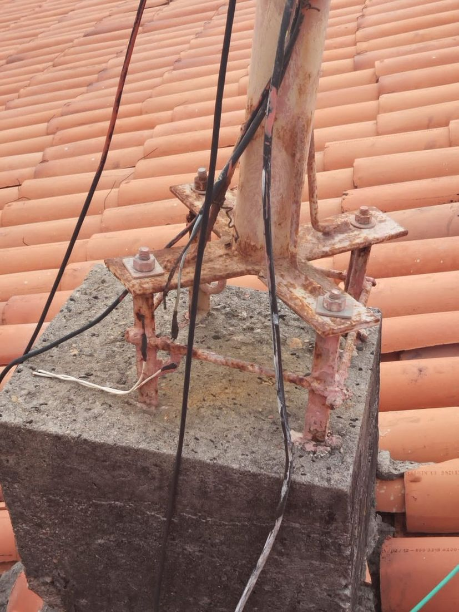
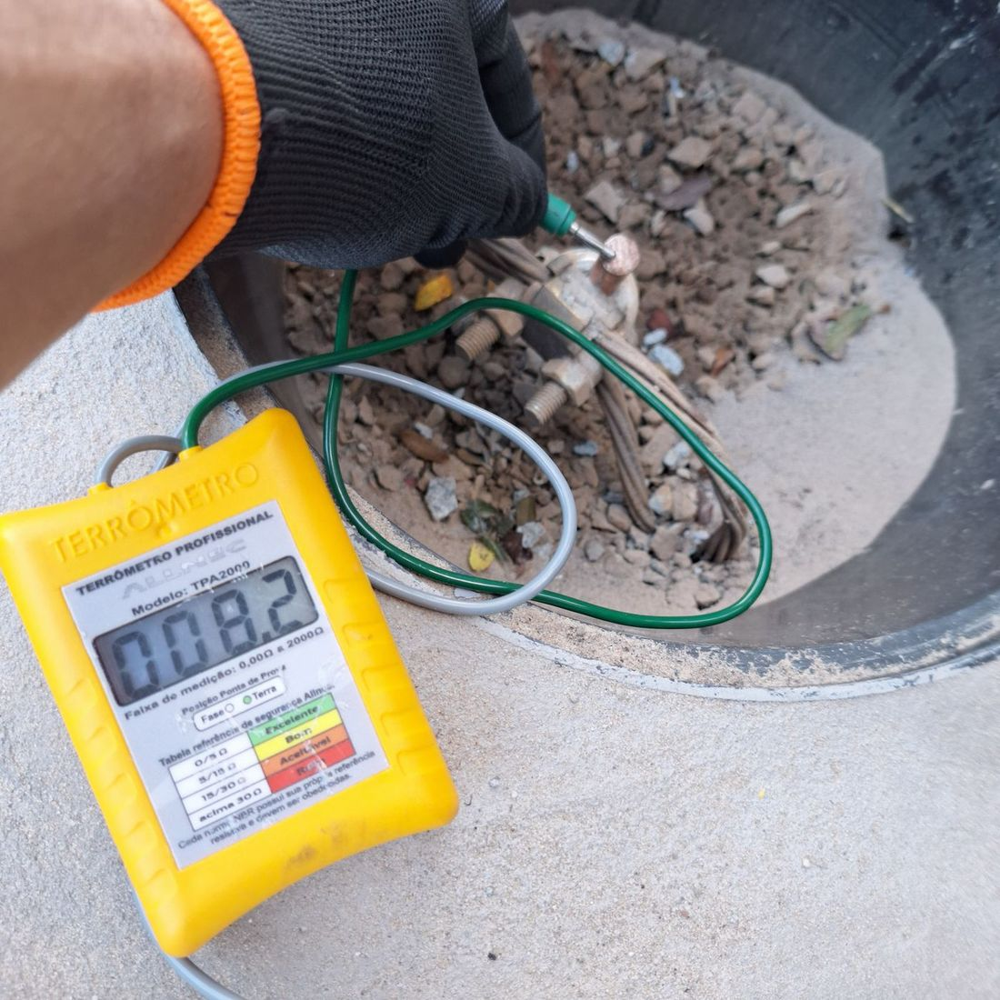
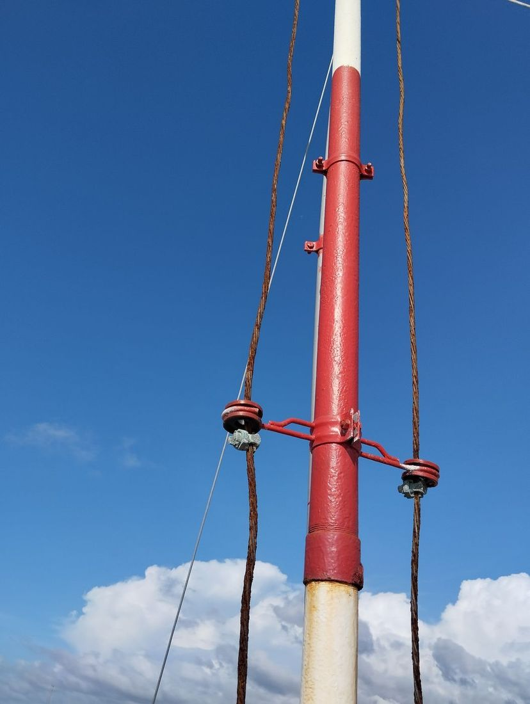

Projeto de SPDA
Dimensionamento da captação, das descidas e do aterramento, conforme a NBR 5419.
SPDA e aterramento
Protegemos a sua estrutura contra descargas atmosféricas e medimos o aterramento, com laudo e ART assinados por engenheiro eletricista.

O escopo exato de cada obra vem na proposta.
Projeto, execução ou laudo?
Dá para contratar uma etapa só ou o conjunto. Na primeira conversa vemos o que falta.
Dimensionamento da captação, das descidas e do aterramento, conforme a NBR 5419.
Instalação do sistema de proteção e do aterramento, com equipe habilitada em NR-10 e NR-35.
Verificação do sistema existente, medições e relatório com ART.
Como funciona
O prazo depende do tamanho da estrutura e do que foi contratado.
Obras



Normas
A NBR 5419 define como o SPDA deve ser projetado, instalado e inspecionado.
O laudo vale até a próxima inspeção periódica. Pela NBR 5419-3, a inspeção é anual em locais com corrosão atmosférica severa, como regiões litorâneas, e a cada 3 anos nas demais estruturas. Também é preciso inspecionar depois de reformas, de mudança de uso ou quando houver suspeita de descarga atmosférica na estrutura.
Sim, conforme a exigência do Corpo de Bombeiros para o tipo da sua edificação. Se você já recebeu a lista de exigências, mande para nós que montamos o laudo de acordo.
É a ligação do sistema com a terra, que leva a corrente da descarga para o solo. Com o tempo, o solo e as conexões mudam, por isso medimos a resistência de aterramento e verificamos a continuidade.
Depende do porte e do escopo, então não há preço fechado sem conhecer o caso. Mande os dados pelo WhatsApp e retornamos com a proposta.
Tipo de edificação, cidade e se já existe SPDA já bastam para começar.